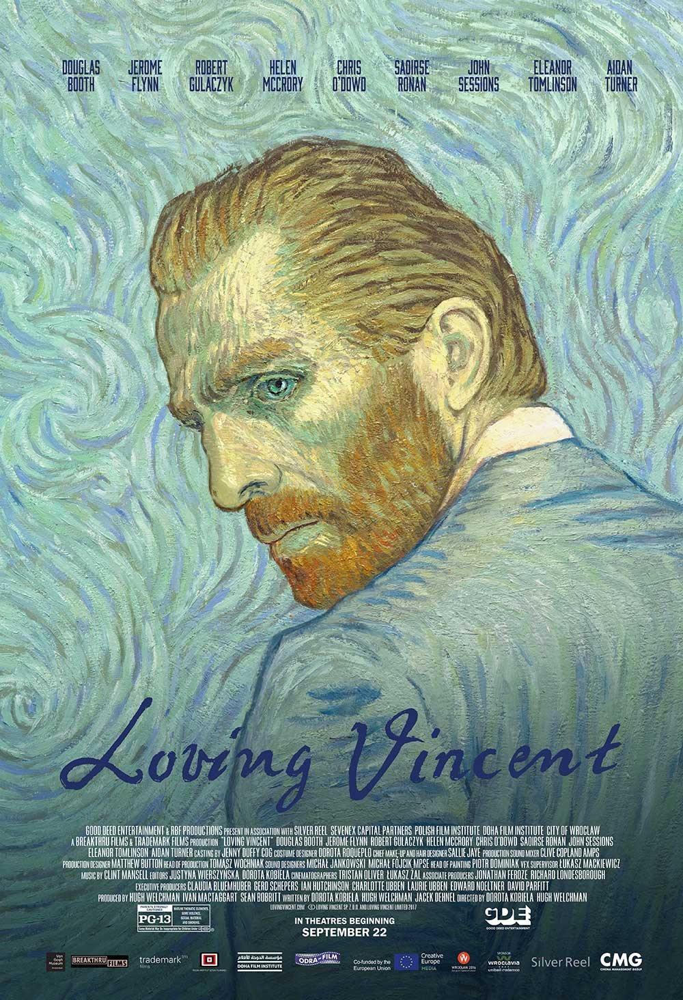

“We cannot speak other than by our paintings”
Vincent died a mysterious death… One night on a road, a man was walking… he was carrying nothing; his hands clasped to a fresh bullet wound leaking blood from his belly. This was Vincent van Gogh, then a little-known artist; now the most famous artist in the world. His tragic death has long been known, what has remained a mystery is how and why he came to be shot.
Loving Vincent is the world’s first fully painted film. As it is painted over 65,000 frames on over 1,000 canvases, Loving Vincent tells that story.
Movie Summary
A year after the death of artist Vincent van Gogh (Robert Gulaczyk), Postman Joseph Roulin Chris O'Dowd) gets his slacker son, Armand (Douglas Booth), to hand deliver the artist's final letter written to his now late brother, Theo (Cezary Lukaszewicz), to some worthy recipient after multiple failed postal delivery attempts. Although disdainful of this seemingly pointless chore, Armand travels to Auvers-sur-Oise where a purported close companion to Vincent, Dr. Gachet (Jerome Flynn), lives. Having to wait until the doctor returns from business, Armand meets many of the people of that village who not only knew Vincent, but were apparently also models and inspirations for his art. In doing so, Armand becomes increasingly fascinated in the psyche and fate of van Gogh as numerous suspicious details fail to add up. However, as Armand digs further, he comes to realize that Vincent's troubled life is as much a matter of interpretation as his paintings, and there are no easy answers for a man whose work and tragedy would only be truly appreciated in the future. —Kenneth Chisholm (kchishol@rogers.com)